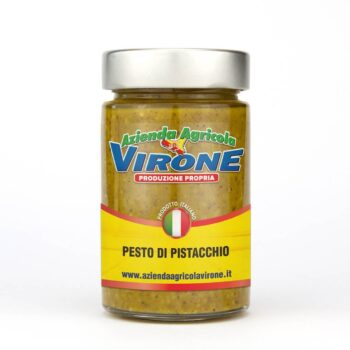
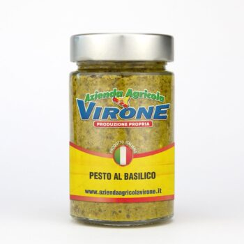
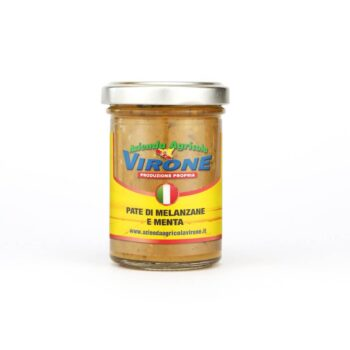
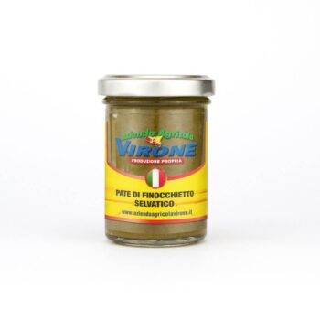
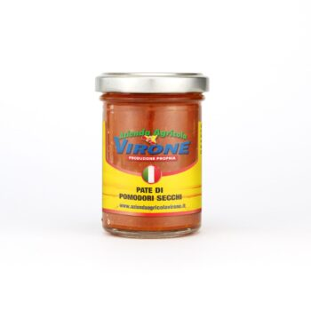
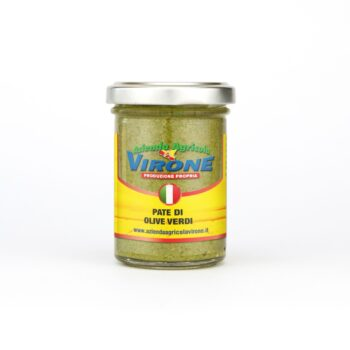

Home / Patè e pesti
Patè e pesti
Pesto di pistacchio e al basilico, patè in olio extravergine da 90 g per bruschette e antipasti.
6 prodotti in questo reparto
Vedi il reparto sul sito
Pesto di pistacchio – 200 g7,90 €
Pesto al basilico – 200 g5,01 €
Patè di melanzane e menta – 90 g3,00 €
Patè sarde e finocchietto selvatico – 90 g3,00 €
Patè di pomodoro secco – 90 g3,00 €
Patè di olive verdi – 90 g3,00 €Casse di agrumi gratisspedizione inclusa nel prezzo
24/48 oreagrumi spediti lunedì e martedì
Paghi come vuoicarta, PayPal, bonifico, Amazon Pay, contrassegno (+5 €)
Ordini anche al telefonoo su WhatsApp, lun–sab 9–18